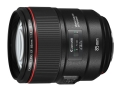

这支镜头保持了佳能L级镜头一如既往的高解像力。采用10组14片镜片结构，其中内置了一枚GMo（玻璃模铸）非球面镜片，可有效改善画面边缘的对比度和清晰度，实现与画面中心相近的高画质。该镜头还应用了ASC空气球形镀膜（AIR SPHERE COATING）。这种在传统蒸汽镀膜上方覆盖空气层的镀膜技术，可形成极低折射率的镀膜面，从而实现出色的防反射效果。特别是当入射光几乎垂直进入时，该技术也将有效抑制眩光及鬼影现象的出现，使画面清晰呈现。
看官方及摄友的片子，总觉得这头是85 1.8的升级款。光圈的限制，造就了1.4全开相当于85 1.2缩到2.0的水准，近距离背景虚化比较弱，空间感较差。成像色彩中规中矩，比85 1.8浓一些但是比85 1.2清淡不少。另外加入了防抖组件，总觉得这货是树脂材质，有损画质。比如220那个防抖，原片出来之后就像强化了边缘，看着很不舒服。总之不像是85 1.2的竞争对手~
最先进的设计和技术，对焦速度快，防尘防水强，抓拍能力强，解析度高，拍照清晰度高
光圈小，色彩氛围不足，加入防抖组件损伤画质，机械耐用性有待时间考证
没有实物测试，只能臆测了。 用在APS系统上，可以替代过去的135/2 L；估计佳能不会再出135/2L 的第二代IS产品了。
看MTF曲线，接近135/2 L 四级防抖 防尘密封 满足专业人像摄影,与50L, 135L, 200L构成人像四重奏
950克，好重 价格多少？